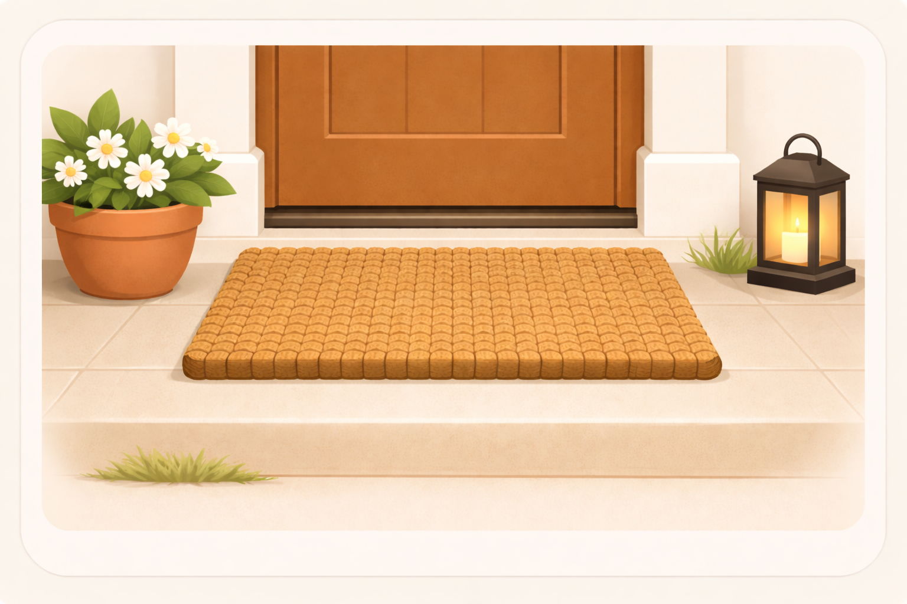

Image slot
The mat that makes the front feel finished
Easy Favorite
Popular Around the Neighborhood
The mat that makes the front feel finished
A good mat makes the whole entry feel grounded, tidy, and a little more finished the second you walk up.